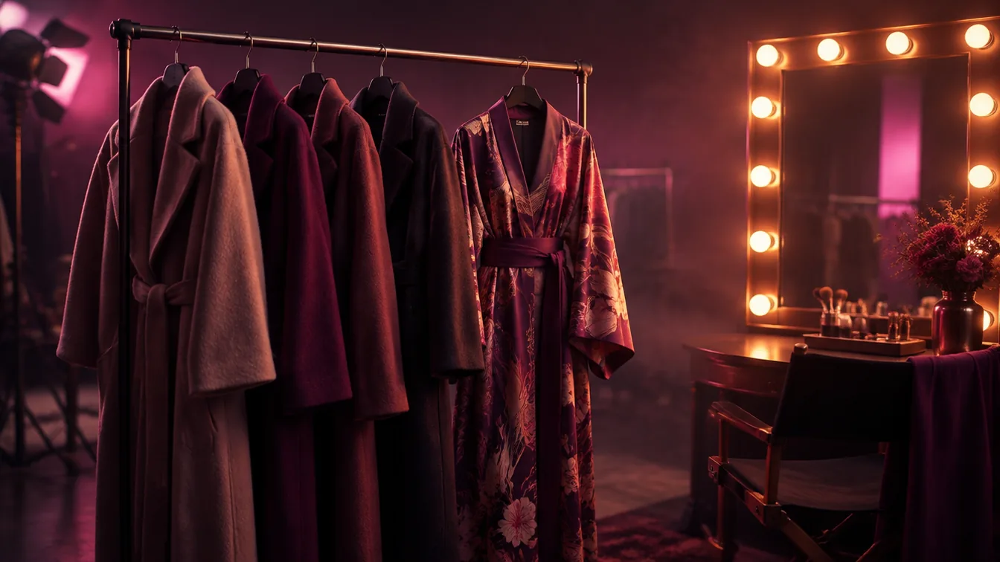

人物の画像は、誰が（演者）、どんな表情で（演技）、何を着て（衣装）、どんな世界にいるか（ストーリー）で決まります。このタブの後半は、その4つを選んで組み立てるためのコマンドです。
【演者】の5つ
主演俳優風（シネマティック）
映画の主役のような存在感のある人物です。肌の質感、印象的な瞳を、フィルムの質感でとらえます。
- 選ぶ・書く項目：役柄、視線、照明、画面の比率
日本人モデル（自然体・透明感） 無料のおすすめ
飾らない自然光と透明感のある、日本の広告やMVのようなポートレートです。
- 選ぶ・書く項目：モデルのタイプ（20代・30代の男女 など）、画面の比率
ビジネスリーダー
自信と知性のある、モダンなオフィスやスタジオでの、信頼感のあるリーダーの肖像です。
- 選ぶ・書く項目：リーダーの属性、衣装、画面の比率
シニアキャスト（年輪と風格）
銀髪とあたたかいまなざしの、人生の深みを感じさせる人物です。
- 選ぶ・書く項目：役柄（教授／職人／老婦人／長老）、画面の比率
ユース（ストリート・テックウェア）
ユースカルチャーの空気と、鋭い視線。オーバーサイズや機能的な服の、MVのようなスタイルです。
- 選ぶ・書く項目：スタイル、画面の比率
【演技】の4つ
静かな決意（カメラを見すえるまなざし）
瞳に強い意志が宿る、映画のクライマックスのような表情です。
- 選ぶ・書く項目：被写体
物憂げ（窓辺の思案）
遠い記憶をたどるような、物憂げな視線。雨や夕暮れの光の、叙情的な表情です。
- 選ぶ・書く項目：窓辺の舞台（雨のカフェ／夕暮れの車窓／夜の寝室）、被写体
自然体の笑顔
作られた笑顔ではない、目じりのしわと、こぼれる笑み。ドキュメンタリーのような、幸福感のある表情です。
- 選ぶ・書く項目：被写体
息をのむ緊張（衝撃の瞬間）
見開かれた瞳、わずかに開いた口元。予期せぬ真実に直面した瞬間の、緊迫した表情です。
- 選ぶ・書く項目：被写体
【衣装】の2つ
クワイエットラグジュアリー（上質な装い）
ロゴのない、上質なカシミヤ、ウール、シルク。控えめで品のある大人の装いです。
- 選ぶ・書く項目：衣装（コート／タートルネック／スーツ など）、被写体
和モダンの着物
伝統的な和装と、映画的な照明の組み合わせ。凛とした立ち姿と、着物の織り目の美しさを出します。
- 選ぶ・書く項目：被写体
世界観とストーリーの5つ
①世界観 ②時代 ③人種・国籍 ④世代 ⑤ファッション ⑥視線、を上から選ぶだけで、設定がかみ合った人物ができるシリーズです。「万能・テキスト」タブの「キャラクター設定書」と合わせると、同じ人物を何枚も描きやすくなります。
世界観と人物が連動したポートレート
6つの段階の選択で、時代と衣装が矛盾しない人物の肖像を組み上げます。
- 選ぶ・書く項目：①〜⑥の段階の選択肢
近未来SFのエージェント
雨のネオンの大都市。光るインターフェースと、機能的な服をまとった工作員です。
- 選ぶ・書く項目：世界観、時代、人種・国籍、世代 ほか
レトロ・時代劇（1920〜90年代）
時代背景と、当時の服の生地の質感を、ていねいに再現する、懐かしい肖像です。
- 選ぶ・書く項目：時代、人種・国籍、世代、ファッション
宇宙飛行士（深宇宙探査）
宇宙服のヘルメットのバイザー越しに見つめる、孤独と決意のまなざしです。
- 選ぶ・書く項目：人種・国籍、世代、画面の比率
宿命の対峙（ドラマのワンシーン）
世界観の中で、人物どうしが向き合い、物語が動き出す瞬間を切り取ります。
- 選ぶ・書く項目：世界観、時代、人種・国籍、世代 ほか
上手に使うコツ
- ほとんどのコマンドで、「🚫 ネガティブプロンプト」（出てほしくないもの）と、「📷 参照画像」が使えます（整え方・参照画像）。
- 選択肢を日本語で選ぶと、英語の表現が入ります。画像・動画のAIは、英語のほうが意図が伝わりやすいことが多いです。
- 1回に変えるのは、1項目だけ。どの言葉が効いたのかが、分かりやすくなります。
使い方は、どのコマンドも同じです。「T2I（画像）」タブを開き、コマンドの行を押して、選択肢を選び、空欄に書き込みます。プレビューで確かめてから、「⚡ 挿入」で、開いているAIの入力欄に入れます（はじめての使い方）。